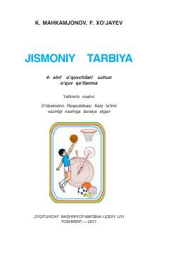

JT4-sinf o'quvchilari uchun jismoniy tarbiya va sport fanidan o'quv qo'llanma.
Ushbu o‘quv qo‘llanma 4-sinf o‘quvchilari uchun jismoniy tarbiya va sport fanidan nazariy hamda amaliy bilim asoslarini o‘rgatadi. Qo‘llanmada kun tartibi, badantarbiya mashqlari, sport turlari va shaxsiy gigiyena qoidalari haqida batafsil ma'lumot berilgan.